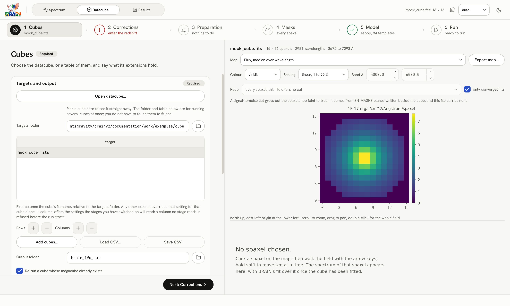
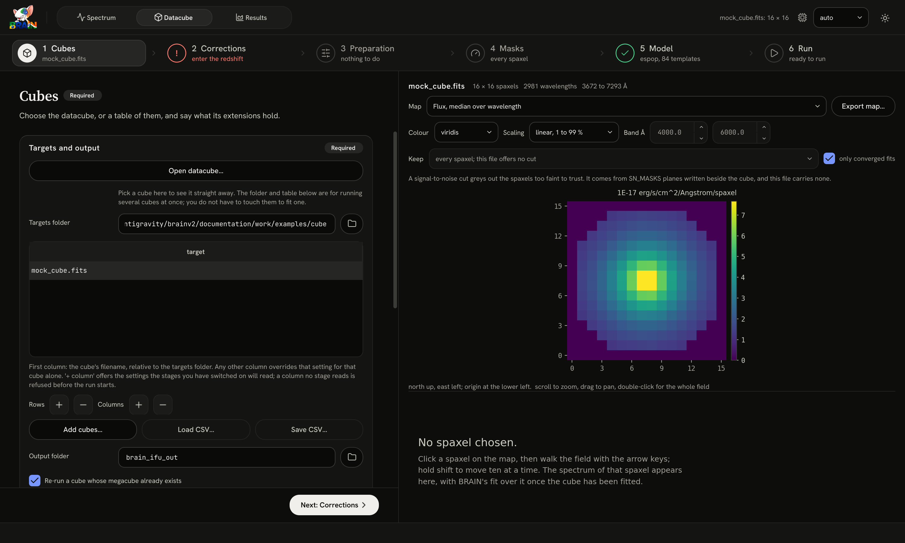
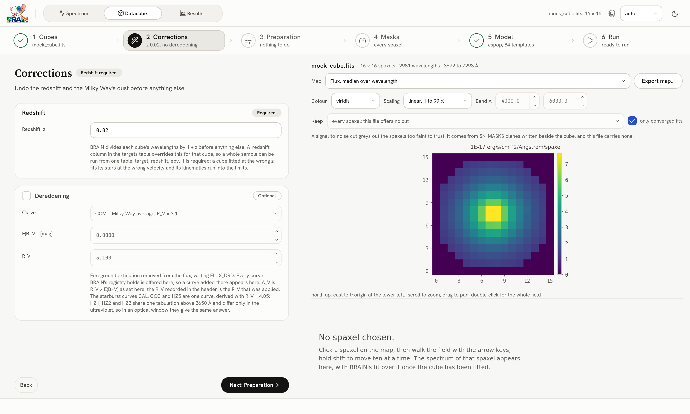
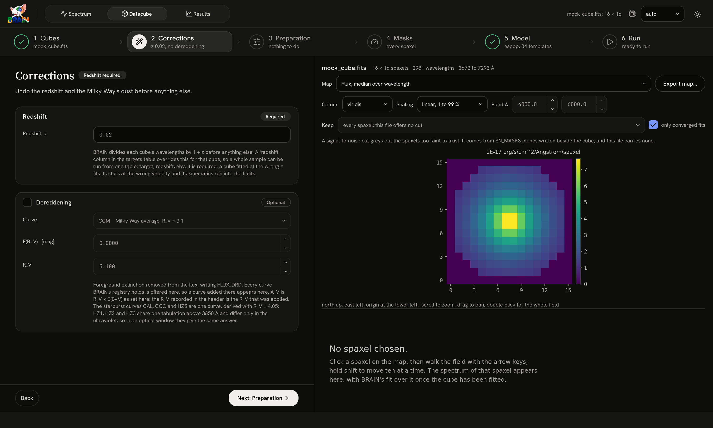
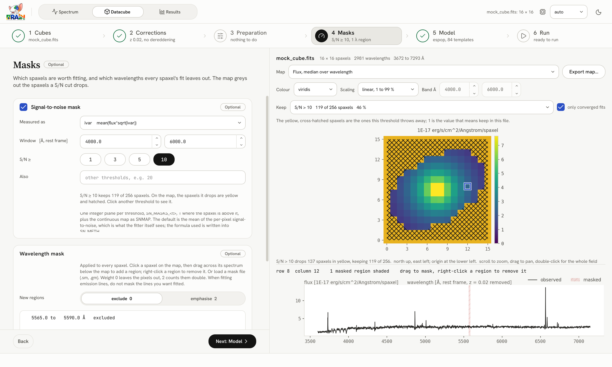
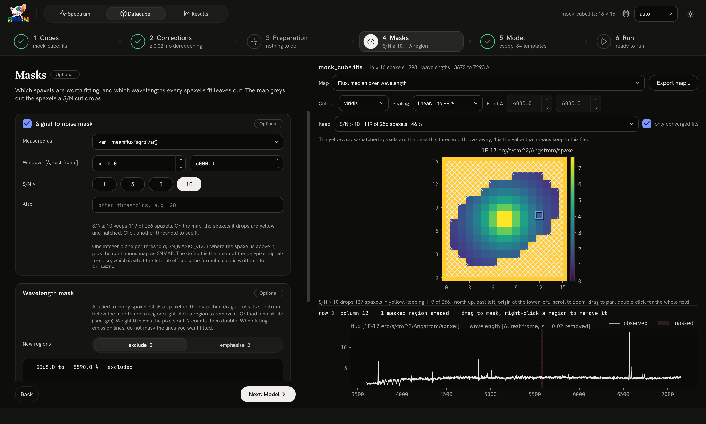

Fitting a datacube#
The Datacube workspace fits one datacube, or a table of them, in six steps: Cubes, Corrections, Preparation, Masks, Model and Run. The right-hand side shows the open cube throughout: a map of the field, and below it the spectrum of the spaxel you click.
Step 1: Cubes#


Step 1 with the mock cube open. The step bar already asks for the redshift (step 2, in red).
Targets and output (required)#
Control |
What it does |
|---|---|
Open datacube… |
picks a FITS cube and shows it at once; this is all you need for one cube |
Targets folder |
the folder the table’s file names are relative to |
the targets table |
one row per cube; the first column is the file name |
Rows +/−, Columns +/− |
add or remove rows, and columns of per-cube settings |
Add cubes…, Load CSV…, Save CSV… |
fill the table from files, or read and write it as CSV |
Output folder |
where the megacubes are written, |
Re-run a cube whose megacube already exists |
ticked (default): every cube is fitted again. Unticked: a cube whose megacube exists is skipped |
Record the pipeline inside each megacube |
writes the run’s settings into the megacube, so the file records how it was made |
Several cubes. Each row of the table is one cube. A column other than the file name overrides one setting for that cube alone, for example its redshift, ebv or mask file; the + column menu offers the settings that the stages you have switched on read. A column that no stage reads is refused before the run starts (Many datacubes).
Input extensions (required)#
Which extensions of the FITS file hold the data (Your data).
Control |
Default |
Meaning |
|---|---|---|
Flux |
|
the flux cube |
Uncertainty |
|
its uncertainty |
Uncertainty is a |
|
what the uncertainty extension holds: |
Quality mask |
|
a MaNGA-style bitmask (bit 10, |
When the open cube lacks an extension named here, BRAIN sets the field to one the file does have (for a JWST cube, SCI and ERR) and says so under the fields; check what it chose, above all what the uncertainty is.
Wavelength scale#
Whether the cube’s wavelengths are in air or in vacuum. It is asked in step 1 whatever the mode: required in espop and nespop, and unused in spop. MaNGA and SDSS are on vacuum wavelengths; MUSE, CALIFA and most ground-based optical spectrographs are on air.
Step 2: Corrections#


Step 2. The redshift is required; the dereddening is optional.
Panel |
Control |
What it does |
|---|---|---|
Redshift (required) |
Redshift z |
the galaxy’s redshift; BRAIN divides every wavelength by \(1+z\) before anything else |
Dereddening (optional) |
Curve, E(B−V), R_V |
removes the Milky Way’s extinction from the flux, with \(A_V = R_V\,E(B-V)\), and writes |
A table can give each cube its own redshift and reddening in redshift and ebv columns, which then replace these fields.
Step 3: Preparation#
Optional stages that reshape the cube before the fit: spatial binning, degrading the spectral resolution, spectral binning and a spatial filter. Each is off until ticked, and each writes its result to the megacube as a new extension. Preparing a datacube describes them.
Step 4: Masks#


Step 4. A cut at S/N 10 keeps 119 of the mock cube’s 256 spaxels; those it drops are hatched in yellow on the map.
Signal-to-noise mask (optional, on by default)#
Control |
What it does |
|---|---|
Measured as |
how the S/N of a spaxel is measured; by default the mean of flux × √(inverse variance) over the window, which is what the fit itself sees. It follows Uncertainty is a |
Window [Å, rest frame] |
the wavelength window the S/N is measured over; it follows the open cube until you set it |
S/N ≥ 1, 3, 5, 10 |
the thresholds to write masks for; clicking one shows on the map which spaxels it keeps |
Also |
any other thresholds, comma-separated |
Each threshold writes an integer plane SN_MASKS_<t>, 1 where the spaxel is above it, and the continuous S/N map is written as SNMAP. Which threshold is fitted is chosen in step 5.
Wavelength mask (optional)#
Regions every spaxel’s fit leaves out or counts double. Click a spaxel on the map, then drag across its spectrum; Wavelength masks describes the buttons.
Step 5: Model#
The model panel shared with the Spectrum workspace (The model panel), followed by one panel of the datacube’s own:
Panel |
Control |
What it does |
|---|---|---|
Datacube fit |
Fit these spaxels |
which S/N mask chooses the spaxels to fit, or every spaxel |
Batch size |
blank (default) lets BRAIN size it to the machine (CPUs and GPUs) |
Unticking Datacube fit runs the corrections, the preparation and the masks without fitting, which is useful to inspect a prepared cube first.
Step 6: Run#
Run the pipeline and follow it: Running a datacube.